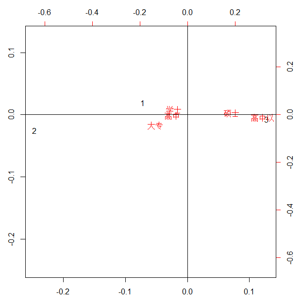
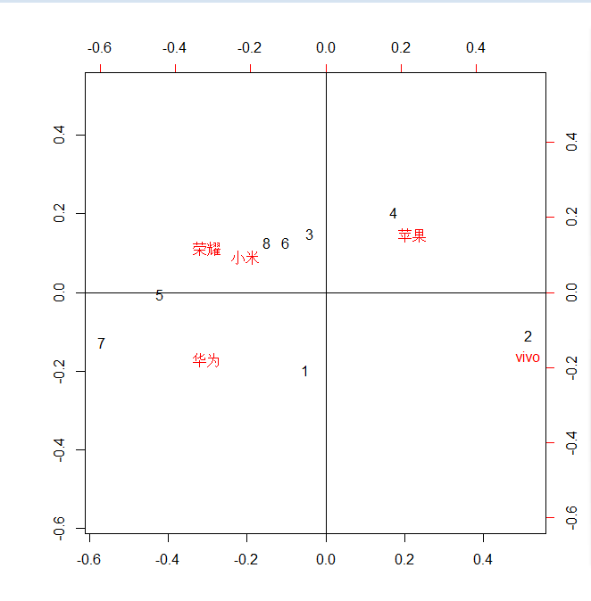

1 | #第一题 |
1 | #第五题 |
 1
2
3
4
5
6
7
8#分析：对应分析图被参考线划分为4个区域，其中，
#(1)在不同象限表示距离较远，这里的距离是任意两者之间相关性的度量；
#(2)位置是相对于中心的距离，距该离越小说明相对所属类别相对常见；
#(3)角度越小，代表两者相关性越强。
#因此我们可以得出以下结论：
# 1.学士，高中和大专的学历相对常见，也对，一般上了高中之后要么进入university（学士学位），或者进入college(大专)
# 2.高中和大专的相关性较之于其它比较来说相关性最强
# 3.硕士和高中以下出现频率较低，说明高中以下学历和硕士学历两者一个处于学历链的偏上端，一个处于偏下端，这也和我们的认知相符。
1 | #第六题 |
 1
2
3#分析：
#(1)使用小米和荣耀的人群相对常见，而使用苹果和VIVO的人群相对较少；
#(2)使用小米和荣耀的人群之间相关性较强，说明一般使用小米的人也可能会对荣耀情有独钟，反之亦然；